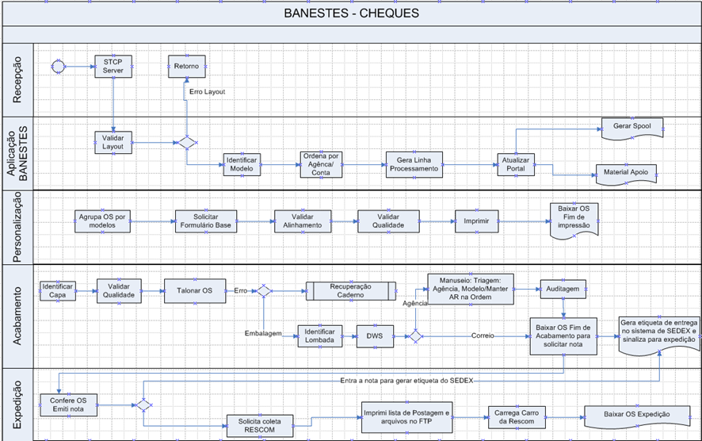

Fluxo de Processo

📥 1. Recepção
- STCP Server: Ponto inicial, onde o arquivo de entrada (com dados dos cheques) é recebido.
- Validação de Layout: O arquivo é validado para garantir que esteja no formato correto. Se houver erro, retorna para correção.
- Saída: Caso válido, segue para a etapa de aplicação.
💻 2. Aplicação BANESTES
- Identificar Modelo: Define o tipo de cheque a ser impresso (modelo, layout, etc).
- Ordena por Agência/Conta: Organiza os dados por conta e agência para facilitar a personalização e entrega.
- Gera Linha de Processamento: Constrói a estrutura de trabalho.
- Atualiza Portal: Sincroniza com o portal do banco.
- Gera Spool / Material de Apoio: Cria os arquivos de impressão e relatórios auxiliares.
🧾 3. Personalização
- Agrupa OS por modelo: Organiza ordens de serviço por tipo de cheque.
- Solicita Formulário Base: Pede os formulários físicos.
- Valida Alinhamento / Qualidade: Checagem visual e técnica da impressão.
- Imprime: Produção dos cheques em si.
- Baixar OS - Fim de Impressão: Finaliza a etapa e libera para acabamento.
🛠️ 4. Acabamento
- Identificar Capa e Validar Qualidade: Garantia de integridade dos cheques.
- Talonar OS: Agrupamento dos cheques em talões.
- Recuperação de Caderno (se erro): Corrige falhas específicas.
- Embalagem / Lombada / DWS: Embala e identifica os pacotes.
- Manuseio / Triagem por Agência: Organiza os pacotes para entrega.
- Auditoria: Verificação final para garantir que tudo esteja conforme.
- Baixa da OS - Fim de Acabamento: Libera para expedição.
- Gera etiqueta SEDEX: Prepara os pacotes para envio.
🚚 5. Expedição
- Confere OS e Emite Nota Fiscal: Verificação final e emissão de nota.
- Entra nota no sistema SEDEX: Integração com sistema de logística.
- Impressão de Lista e Arquivos FTP: Geração de relatórios de postagem.
- Solicita Coleta / Carrega Carro RESCOM: Prepara e entrega à transportadora.
- Baixa OS Expedição: Finaliza o processo no sistema.